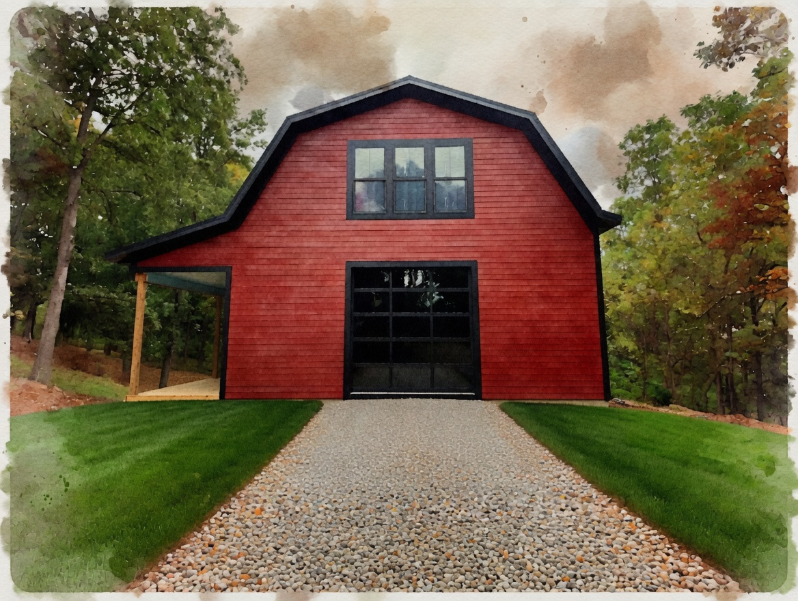
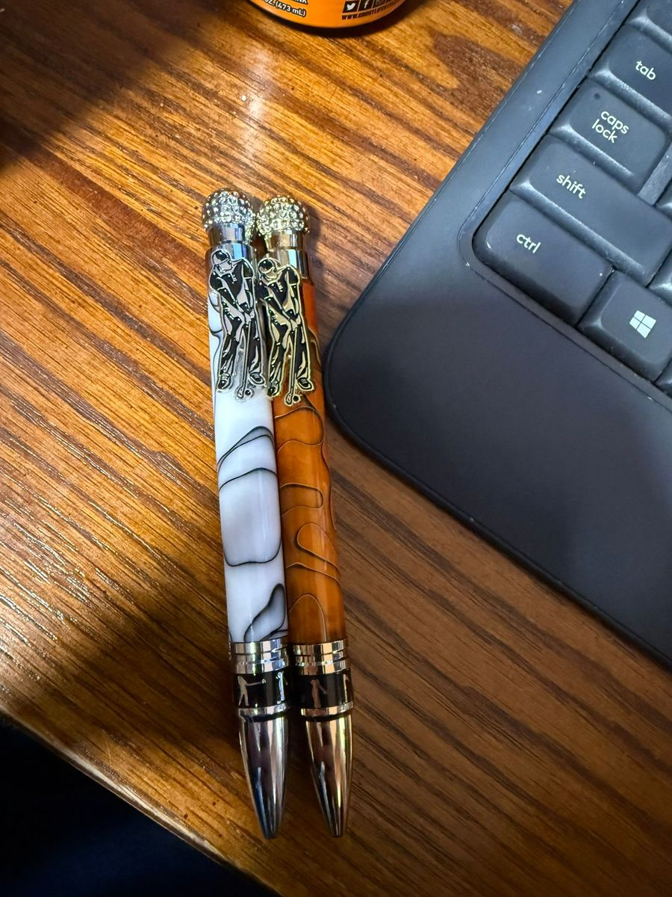
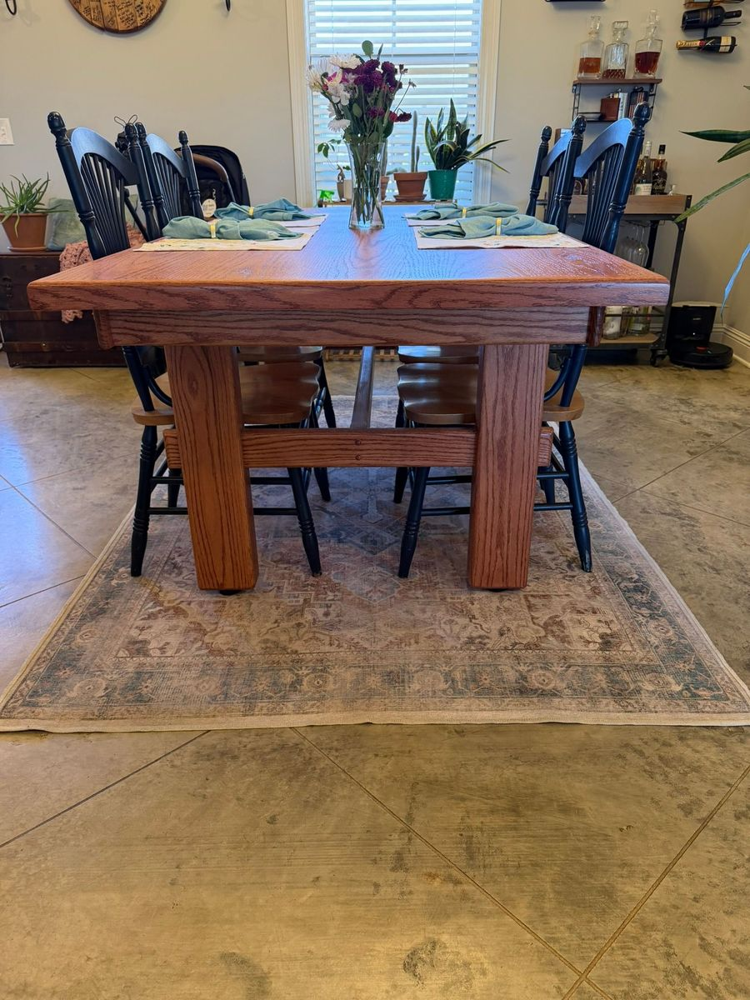
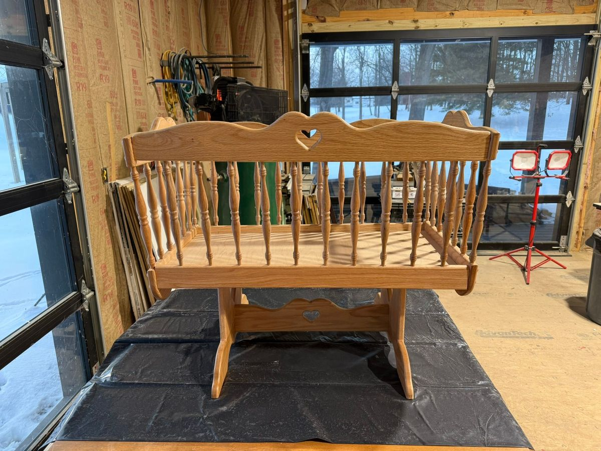

No. 01
i.
Local windfall, not lumber-yard stock
Every board starts as a standing tree within a day's drive. Urban salvage, storm wood, a neighbor's old sycamore.
Michael Cedoz — a one-man shop in Knox County, turning storm-felled Ohio hardwoods into bowls, pens, tables, and commissions meant to outlive the maker.

Michael Cedoz has been turning wood for the better part of two decades, most of it alone, most of it after dark. Redbarn is the name on the door — a gambrel-roofed shop a few miles outside Mount Vernon, where the Kokosing cuts through Knox County and the oaks have opinions about weather.
The work begins where the tree ends. A neighbor calls about a windfall; a storm takes a limb off a fence-line cherry; a 100-year-old oak comes down for construction. What arrives on the trailer is rarely dimensional lumber. It's a log, with knots, with history, with a life it has already lived.
Everything that leaves the shop has been handled — milled, stacked, dried, re-stacked, planed, chiseled, sanded by the same pair of hands. There are no apprentices. There is no CNC. There is a kettle, a radio that mostly works, and two shop dogs — Kodiak and Lizzie — who supervise.
Every board starts as a standing tree within a day's drive. Urban salvage, storm wood, a neighbor's old sycamore.
Machines rough it in; hand tools finish it. A surface planed, not sanded, catches light in a way a belt sander cannot.
Finishes you can renew with a rag and an afternoon. Wood should age, not be sealed under plastic.
From log to final coat, the same hands. No outsourcing, no subcontracting, no white-labeling.
Two winters under the eaves before a board is considered ready. Kiln-drying saves time; air-drying saves character.
A Redbarn piece is repaired for the life of the maker. Mail it, drop it off, we'll mend it.

Turned from select hardwoods — knots, grain, and character left intact.

Precision writing instruments and everyday carries, balanced in the hand.

Tables, consoles, and statement pieces that warm a room and hold a family.

Bring the idea — a dimension, a room, a story. We'll figure out the tree together.
When our son was born, we wanted something truly special for his nursery. Michael crafted a beautiful bassinette that's as sturdy as it is gorgeous. Knowing it was made by hand makes it that much more meaningful — this is something we'll pass down for generations.
We'd been searching for a kitchen table that felt like the heart of the home, and Michael delivered exactly that. The oak is absolutely stunning — the grain, the finish, the craftsmanship. Every time we sit down for dinner, someone comments on how beautiful it is.
Found Mike's mud kitchen on Facebook Marketplace and knew right away the granddaughters would adore it. A quick Venmo, a friendly pickup at the workshop, and the girls have barely come inside since. Exceptional craftsmanship — every joint solid, every edge smoothed — and Mike was a pleasure to work with from first message to handoff.
Most pieces begin with an email — a photo of a room, a rough dimension, a story about someone the piece is for. There's no form required. Just a note, and a patient reply.
michael@redbarnwoodturning.com →